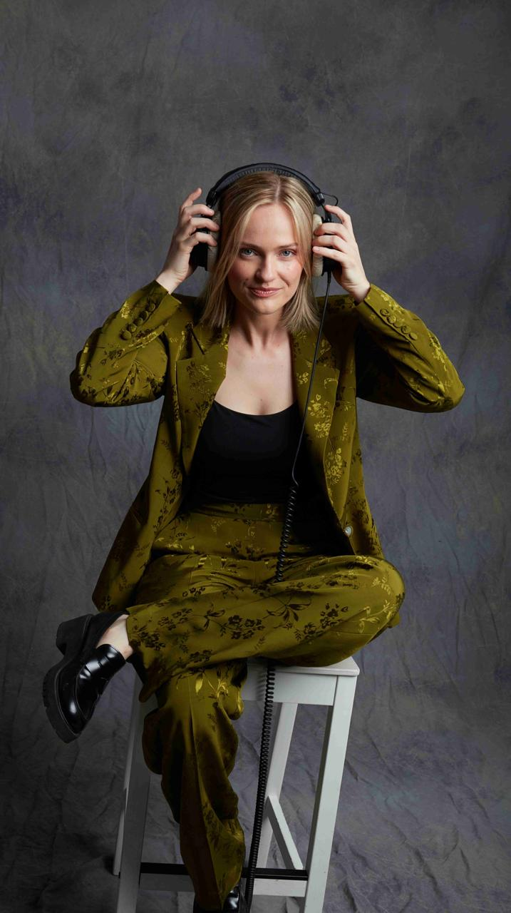

Yulia Protasova
Hey, my name is Yulia Protasova. I am a Ukrainian composer and pianist based in Barcelona and Valencia, Spain, creating music for film, television, video games, and other media. I am a multiple award-winning composer for Best Original Soundtracks, and a member of the Barcelona Film Composer Collective, where I collaborate on innovative projects.
